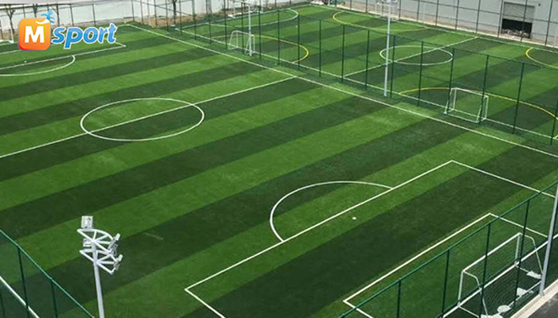
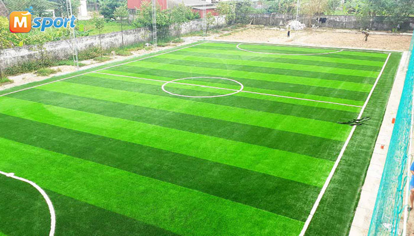

Sân bóng được coi là đạt tiêu chuẩn đám ứng đầy đủ các tiêu chí như kích cỡ, mặt bằng. Kết hợp với sự an toàn cho những cầu thủ tương lai tham gia một các thuận tiện cho đội hình 5-7 người.
-Sân bóng Trung Văn luôn được xem xét cơ sở hạ tầng trước khi mở, nên các cầu thủ luôn an tâm khi đá bóng ở đây. Sân bóng lắp đặt hầu hết các sân bóng nhân tạo là đèn áp cao. Với sân bóng 5 người thì cần khoảng 12 đèn/sân còn với sân 7 người phải cần đến 16-20 đèn/sân.

Thông tin chi tiết:
Địa điểm: Tây Mỗ, Nam Từ Liêm, Hà Nội, Việt Nam
Số điện thoại: 02873062788
Thời gian mở cửa: 6:00 – 22:00
Giá vé: Đang cập nhật
Click để về trang trước